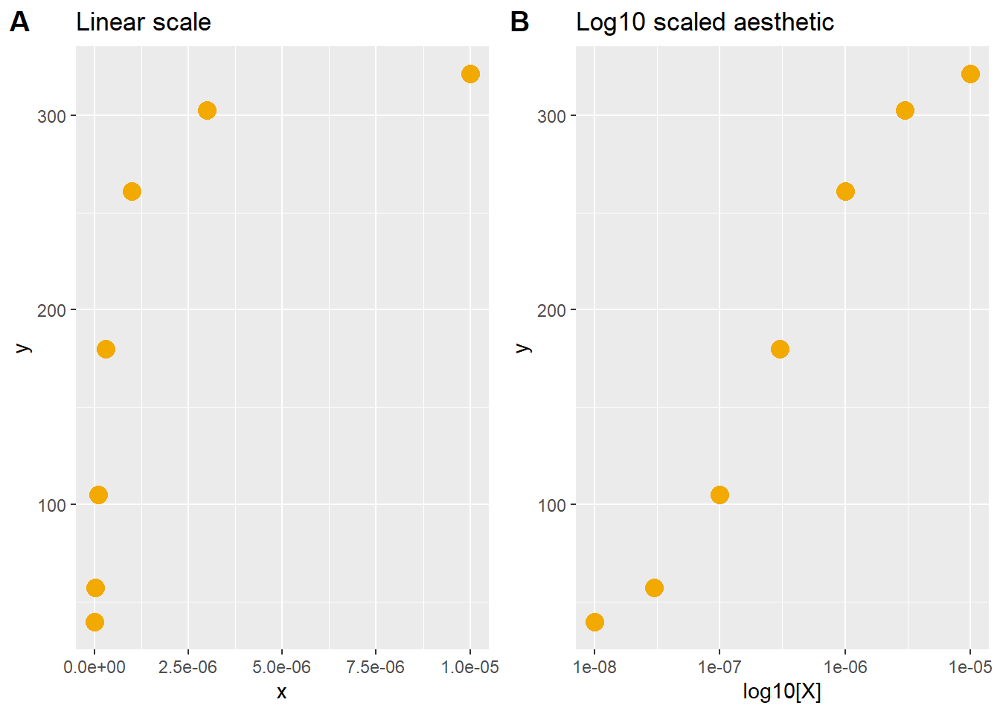
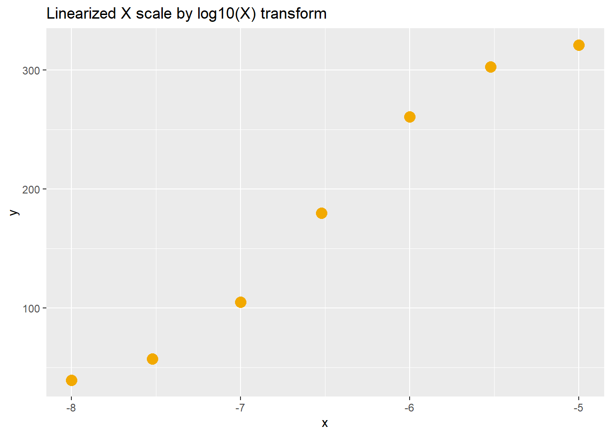

Chapter 38 Non-linear regression introduction
Nonlinear regression is a statistical method to fit nonlinear models to the kinds of data sets that have nonlinear relationships between predictor and dependent variables. The regression fits produce estimates of the model parameters. These model parameters are useful because they provide a way to quantify some biological process (eg, rate and equilibrium constants, minimal and maximal responses, etc).
Nonlinear regression has added importance since biological systems tend to operate in nonlinear ways.
In general, models are just mathematical equations that describe how \(Y\) is produced by \(X\). In nonlinear regression we’ll feed a model formula pairs of \(X,Y\) data from an experiment. The model parameters responsible for giving nonlinear shape to the relationship between \(X\) and \(Y\) are then determined by the regression method.
The statistical analysis involving nonlinear models is nearly identical to that for linear models. The regression technique itself customizes the fit of a chosen nonlinear model to some data produced in the lab. These best fits are determined by a minimization of the sum of the squared residuals between the model values for the response and the experimentally-derived values. The only difference is that nonlinear regression solves the problem iteratively, rather than mathematically.
A common misconception is that a data set is fed into some mythical omnibus function, which then identifies the right model and fits it to the data.
Nobody really has that one…yet. There are too many ways nonlinear data can happen, yet in biology, only some of these ways are important. Therefore, it takes the expertise of a researcher to select the right model for the data.
By important I mean that the models have some theoretical basis. Most of the time we’re working on experiments where the right models to choose are obvious. For example, if we are doing enzyme kinetics we are probably using the Michaelis-Menten model. If we are doing binding assays we are using a model based upon the mass action law. And so on.
If there is no pre-existing theoretical framework, as a general rule, the nonlinear regression process is flexible enough to accept completely new models.
38.1 Uses for nonlinear regression
There are three big reasons why you’d use nonlinear regression:
- Artistic
- Interpolation (and simulation)
- Conducting statistical inference
Sometimes we have nonlinear data and all we want to do is draw a pretty curve through the points. The objective is purely visual. Sometimes we’ll run a model-based regression to get the pretty curve. Other times we’ll use a smoothing regression that is, truly, just a pretty curve. You’ll see how to do both of those below.
Other times we have measured values of \(Y\) for which we want to impute values of \(X\). That’s achieved by nonlinear regression of an \(X,Y\) standard curve (eg, ELISA), which is used to interpolate values for unknown samples.
Conceptually related to this is simulating nonlinear data for a range of \(X\) values using a given model and fixed parameter values. There are several use cases for simulation. Perhaps the most important is in trying to write a custom model that looks like data you’ve generated. Or to figure out what a model really means, by playing with it as in a sandbox. There’s no better way to learn it quickly than by simulating data with it. Extensions of this include creating explanatory or comparative figures, and performing Monte Carlo-based preplanning.
The most common statistical use is to estimate the parameter values of the nonlinear model that best fits some sample data, and then conduct statistical inference on those values. These parameter values from our data represent “constants” that represent an important biological feature.
38.2 Example of the process
Some common laboratory phenomena in their pre-depletion states can be described using exponential growth models. For example, bacterial growth in culture, or the polymerase chain reaction.
38.2.1 It starts with nonlinear data
We wish to estimate the growth rate and initial inoculate of a bacterial culture by taking aliquots at the indicated times through measuring optical density (A600 nm) on a spectrophotometer.
We have a data set (edata) of \(x, y\) pairs. The variable names are actually hours and A600, respectively, and plotted in panel A of the figure below.
The response \(A600\) is clearly nonlinear on values of \(hours\).

Figure 38.1: A. Primary nonlinear data looks exponential. B. Same data as A log-transformed looks linear.
38.2.2 What nonlinear model describes that data?
We remember enough algebra to realize an exponential function could have produced something like the data in panel A. Consistent with this, natural log transformation of the values of \(Y\) linearizes the response (see panel B in the figure).
We can write a general exponential growth model as follows: \[y=y_{min}\times e^{k*x}\] In this form the parameter \(k\) is a constant with units of reciprocal \(x\). The parameter \(y_{min}\) is the lower asymptote, serving to estimate the value of \(Y\) in the absence of \(X\). Therefore, \(k\) modifies the exponential rate by which \(Y\) changes with \(X\).
The nonlinear regression method in general exists to obtain estimates for \(k\) and \(y_{min}\) from experimental data such as that shown in figure A.
That’s useful when these model parameters have biological meaning. Sometimes we are interested in only \(k\) or in \(y_{min}\). Other times, both parameters are important in drawing some scientific picture. It depends on the project we’re working on.
38.2.3 Fitting a model to data
To get those estimates we run a regression to fit an exponential model to the data.
Here, we’re using a fitting function from the nlfitr package. Why fitegro and not some other function? The function fitegro has the right model for this purpose.
## Nonlinear regression model
## model: A600 ~ (ylo) * exp(k * hours)
## data: data
## k ylo
## 0.5092 77.0827
## weighted residual sum-of-squares: 2.074
##
## Number of iterations to convergence: 13
## Achieved convergence tolerance: 1.49e-0838.2.4 Interpreting regression model output
Let’s go over that output.
First of all, understand that fitegro is just a wrapper function for nlsLM, which is also a wrapper function for nls. It produces class “nls” R object. There is a lot more information produced through the regression besides the default nls output seen here. This additional information can be accessed by other generic functions (eg, confint, summary, predict, residuals, etc). See ?nlsLM for more details.
Second, it states the model, not in general terms, but in terms of the input variables. In spoken English reading from right to left, the model says, “fit this model to the A600 values”. This is worthy of a look just to make sure we have the right model.
The output estimates for the parameters k and ylo are the most important features of this regression output. They are what we most want. \(k=0.5092 per hour\) while \(ylo=77.08 in A600 units\)
We’ll discuss later how we work with these parameter estimates statistically when doing experiments.
The fact that the regression converges to a solution is hopeful. It suggests a good fit but that’s not always the case. It is important to look at that fit because sometimes regression can converge to an absurd solution.
38.2.5 Check the fit graphically
As a first step, the bloody obvious test is the best way to assess a fit of the model to the data. That comes from looking at the regression fit graphically. Does that curve look good and right?
In the code chunk below shows two regression fits. The blue line is similar to the fitted output, but not identical because it is unweighted. The regression for the blue line is actually performed within ggplot2’s geom_smooth function. It’s the way to go when doing unweighted regression.
Some quirks. Note how the formula must be argued in a generic form. The ggplot aes previously defined x=hours and y=A600. Notice the start argument values, put there to make it easier to get the right solution. Without them the regression may or may not self start. I’d say that blue curve is a pretty good fit. But YMMV.
Drawing the model that is the precise fit of the fitegro function is executed using the stat_function. Remember homework 4 when we did this with the dnorm function? We simply take the regression parameter values and pop them into a custom function.
ggplot(edata,
aes(hours, A600))+
geom_point()+
geom_smooth(method=minpack.lm::nlsLM,
formula = "y ~ ylo*exp(k*x)", #note how this is a general formula
method.args = list(
start=c(ylo=77,k=0.5)),
se=F)+
stat_function(fun = function(.x) 77.0827*exp(.x*0.5092), color="red")
Figure 38.2: Look at the model’s curves to check on the fit.
Notice how the red line is not equivalent to the blue line. That is the effect of weighted regression.
38.2.6 Convergence?
Now a word about the word convergence, which has pragmatic importance.
Nonlinear regression in R (and commercial software) resolves parameter values by an iterative algorithm that converges onto the solution. Iterative minimization of the residual error via ordinary least squares lies at the core of this method.
The model these algorithms are actually working with has an added term for residual error, \(\epsilon\)
\[y=y_{min}\times e^{k*x}+\epsilon\]
The nonlinear regression algorithm calculates values for \(y_{min}\) and \(k\) that also give the lowest possible value of \(\epsilon\). Best fit happens when the sum of the residual differences from the data points to the model’s curve are minimized with any additional changes in \(y_{min}\) and \(k\).
The software method takes the data along with starting parameter estimates fed by the researcher, calculates residuals, modifies those estimates, re-calculates residuals, modifies the parameter values again, and so on. Usually it takes a half-dozen or more of these cycles to converge on a stable minimization of residual error. It took 13 cycles in the example above.
38.2.7 Convergence is not idiot proof
Getting regression to converge is the key. But did it converge correctly?
It is important to understand that several factors influence how well regression goes and whether it converges.
The starting values the researcher suggests can affect how well convergence to a solution works. Bad estimates can cause convergence to not occur, or to veer off into a nonsense fit.
The fitting algorithm itself impacts whether there is convergence to a solution. Of the 4 options (see below), I think the Levenberg-Marquardt algorithm plays best with typical biological models and over a range of data from crappy to tight. YMMV.
Noisy data is hard to look at and even harder for the fitting algorithms to solve. When the data is crappy, don’t expect a fit to work. This isn’t reading tea leaves.
Use as many data points as possible. Nonlinear regression feasts on data points. The more data points in a data set, the better things work. There are a few ways to do this. When the set has technical replicates, leave them all there. Don’t average them. When doing time courses or dose-responses, add more time points or doses.
The number of parameters influences convergence. Every model parameter comes at the cost of a degree of freedom. A model with too many parameters and too few data points is probably not going to work. If there are only 6 dose levels, no replicates, and 4 parameters in the model, it is probably not going to converge. YMMV.
Finally, when there are results, the question is did this function produce the the best fit?
Technically, yes, when convergence is achieved, by the standard of minimizing \(\epsilon\), these parameter values are the best fit of that model. That is not the same as asking whether this model is the best for that data. There may be other models that fit better. Nested model nonlinear regression is a way to test if one of two related models fit.
The bottom line is that compared to the other statistical methods we’ve covered to this point in the course, nonlinear regression is bit more hands on. We have to know our models. We have to know our data. Which means we have to know what the model parameters mean, and we have to know what values we can reasonably expect for them.
38.3 Nonlinear models in general
There are many different nonlinear models to choose from that are routinely deployed for analysis of biological systems. Every model has parameters that carry specific biological meaning.
It’s not necessary to learn every nonlinear model. Chances are that if we need nonlinear regression in our work we’re working with a single model or maybe a pair. Chances are we’ll need one that is a well-understood, “off the shelf” model, rather than writing a new custom model.
The GraphPad Prism Statistics Guide offers an excellent comprehensive resource for nonlinear regression, including a couple of dozen different functions. You may recognize the shape of your own data in some of these. All of the basic concepts that are part of solving nonlinear regression problems using the Prism software apply to using R (or any other software).
38.4 nlfitr
We (myself, Jessica Hoffman, Austin Nuckols and Lauren Jeffers) are working on a package called nlfitr. You can install the most current MVP (minimal viable product) onto your R version from Github. Our vision is for nlfitr to be a comprehensive resource for nonlinear regression in R.
The ultimate goal of the package is to offer researchers off the shelf functionality in terms of specific models, along with the better behaved Levenberg-Marquardt algorithm. This can go a long ways towards making nonlinear regression in R easier.
At its current stage, the functions in nlfitr fall into two classes: simulation or fitting functions. The simulation functions are intended to serve as sandboxes for learning how a given nonlinear model works. That’s through playing with the model parameters and variables and see how that affects the curves.
These sim functions are also intended for use in experimental planning, such as establishing feasibility, Monte Carlo testing, and so on. The sim functions with heterscedastic simulation capability offer a way to simulate a very common feature of biological data…higher variance at higher input levels.
The fitting functions are for fitting a given nonlinear model to some experimental data. In effect, they are wrapper functions for nlsLM. For the most part, they do the formula specification work for the user, which makes using nlsLM much easier.
38.5 Nonlinear regression functions in R
From here on the assumption is the researcher wishes to use nls or nlsLM directly, and not nlfitr. This section also provides more information about nonlinear regression in R that is worth understanding.
The main nonlinear regression functions in R are nls in the base stats package and also nlsLM from the minpack.lm package. nlsLM is a wrapper function for nls, designed to run virtually the same as nls.
38.5.1 The fitting algorithms
The fitting algorithms used in nls are the real engine in nonlinear regression. The three fitting algorithm options in nls include the Gauss-Newton, Golub_Pereyra and Port. nlsLM offers a fourth–the Levenberg-Marquardt. The details of these are beyond the scope. When they work, all four will give very close to the same results, but not exactly the same.
Pragmatically, their main differences is that they don’t always work on a given dataset.
The researcher can select among these to find one that solves their own nonlinear regression. Of the four, my general impression is that the Levenberg-Marquardt plays nicest, which means it is less likely to fail to reach convergence than the others. That explains why we use it in the nlfitr package. YMMV.
Let’s just keep things simple for a moment and talk as if nls and nlsLM are the same thing and discuss the key features:
38.5.2 formula
Nonlinear regression functions require the researcher to define a nonlinear formula. A formula is a translation of a nonlinear model equation into a format that R can work with. For example, here again is the exponential model: \[y=y_{min}\times e^{k*x}\]
Here is the corresponding general formula for nls: \[y \sim~ ylo*exp(k*x) \]
When using the nls-based functions, the formula has to be modified further to correspond to the variables in the working dataset. For our bacterial growth example above we have to tell the nlsLM function exactly which variables to regress. Note how y and x in the formula are replaced by A600 and hours:
## Nonlinear regression model
## model: A600 ~ ylo * exp(k * hours)
## data: edata
## ylo k
## 44.8304 0.5831
## residual sum-of-squares: 1.09e+08
##
## Number of iterations to convergence: 13
## Achieved convergence tolerance: 1.49e-08A point of confusion: ggplot has a different standard (see the graph above with the fitted curve). In geom_smooth, the formula is kept in general terms.
38.5.3 data
We have experimental data as \(x, y\) pairs. Both are continuous variables. Create a data frame that has a column for each. When the experiment has multiple replicates, whether independent or technical, list all replicates under either of the two columns. Add a third column with a replicate ID.
R differs from other software. You don’t want a separate column for every replicate. pivot_longer is your friend.
The column names can, and should, be natural. Name the variables as you would otherwise. There is no need to label them \(X\) and \(Y\).
38.5.4 start
Although nls can self Start without any hints for the values of the model parameters, it’s usually best to feed a list of starting values. These get the iterations off on the right track. They only need to be rough guesses of what the final values might be.
38.5.5 weighting
In OLS the data points that are furthest from the model’s curve contribute more to the overall sums of squares. As a result, the curve tends to be “pulled” in the direction of these outliers.
It is very common for nonlinear biological data to have greater variation at higher values of responses than at lower values. Therefore, when we don’t adjust for this heteroscedasticity the regression solutions are biased towards the data points in the sample that are further away from the curve.
Weighted nonlinear regression is just a method to discount this excessive variation and give all data points a more equal contribution to the overall regression solution. Weighted nonlinear regression minimizes the weighted sums of squares rather than minimizing the unweighted sums of squares.
There are a variety of weighting schemes. The one recommended for continuous data is the reciprocal y^2 method. Reciprocation is a simple way of reducing variance without changing the relationship of a variables values. Thus, the sums of squares are minimized using \(1/y^2\) values rather than \(y\).
38.6 Nonlinear models and parameters
A nonlinear model is just an equation or function that describes the relationship between a predictor variable \(X\) and an outcome variable \(Y\). The shape of the relationship is dictated by the equation’s parameters. Thus, values for \(Y\) are determined by a nonlinear combination of values for \(X\) and the equation parameter(s), which we can label generically as \(\beta\).
38.6.1 Hyperbolic stimulus response functions
The general hyperbolic function is, \[Y=\frac{y_{max}\times X^h}{K^h + X^h}\]
This function, and its many derivatives, are used to model a diverse array of stimulus-response systems in biology, making it perhaps the most important mathematical relationship in the field.
The basis of these phenomena is the mass action principle, \[X+Y \rightleftharpoons XY\], where \(XY\) represents any response dependent upon both \(X\) and \(Y\).
These include Michaelis-Menten enzyme kinetics, stimulus/dose-response phenomena, bi-molecular binding, and much more.
The equation has three parameters: The maximal value of \(Y\) is estimated asymptotically as \(y_{max}\). The parameter \(K\) represents the value of \(X\) that yields the half-maximal response, or \(\frac{y_{max}}{2}\). The Hill slope, \(h\), operates in the function as an exponential coefficient. Therefore, it determines both the steepness and the sign of the relationship between \(Y\) and \(X\).
Each of these parameters can have different physical meanings, depending upon the biological process that the hyperbolic function is applied to.
For example, with bi molecular binding data, \(y_{max}\) represents the number of binding sites or complexes, \(XY\); \(K\) represents the equilibrium dissociation constant, or affinity, between the two molecules; and the value of \(h\) provides insights into whether the binding deviates from simple mass action. For example, the Hill slope value may suggest positive (\(h>1\)) or negative (\(0<h<1\)) cooperativity. Negative values of \(h\) generate downward-sloping curves; for example, inhibition of \(Y\) by \(X\) occur when \(h<0\), and these can be very steep or shallow, too.
Hyperbolic functions are responsible for graded responses that can occur over a wide range of values of the predictor variable. When plotted on a linear X-scale, the predictor-response relationship has a hyperbolic-like shape, thus their name.
set.seed(1234)
p1 <- simhetdr(x=c(1,3,10,30,100,300,1000,3000), k=100, ylo=100, yhi=300, h=1, cv=0.15, reps=3, log=F)
set.seed(1234)
p2 <- simhetdr(x=c(1,3,10,30,100,300,1000,3000), k=100, ylo=100, yhi=300, h=1, cv=0.15, reps=3, log=T)
plot_grid(p1, p2, labels="AUTO")
Figure 38.3: A. Linear scale plot of hyperbolic data. B. Log10 scale plot of hyperbolic data.
The same data appear more ‘S’ shaped when plotted on a log x-scale. However, it is important to point out that extreme values of \(h\) can dramatically change these more typical relationships. As values of \(h\) get larger, the \(Y\) response to \(X\) is more switch-like than graded.
set.seed(1233)
p1 <- simhetdr(x=c(1,3,10,30,100,300,1000,3000), k=100, ylo=100, yhi=300, h=2, cv=0.15, reps=3, log=F)
set.seed(1234)
p2 <- simhetdr(x=c(1,3,10,30,100,300,1000,3000), k=100, ylo=100, yhi=300, h=2, cv=0.15, reps=3, log=T)
plot_grid(p1, p2, labels="AUTO")Figure 38.4: Influence of higher Hill slope. A. Linear scale plot of hyperbolic data. B. Log10 scale plot of hyperbolic data.
S-shaped curves have lower and upper plateaus. These plateau values correspond to the ylo and yhi parameter values that you’ll see in the formulas for the nonlinear models below. The span between the plateaus represents the dynamic range of the response variable, \(y_{max}=yhi-ylo\).
Incorporating ylo and yhi into a working formula for the hyperbolic model allows for a more regression friendly way of expressing it. This allows the operator some flexibility when initializing the regression using start estimates. For example, when working with a difficult data set the regression has a better chance for solving the other parameters, ylo or yhi, or both, when they are held at fixed values.
38.6.2 Visualizing nonlinear data and log scaling
Nonlinear data generally occur over orders of magnitudes. Either the responses are ‘log normal’ or, more often, the predictor variable is applied over a range spanning a few orders of magnitude. For example, doses of a drug at 10, 100 and 1000 units span three orders of magnitude.
Look very carefully at the code below, which simulates nonlinear data.
The code passes linear values of \(X\) into a hyperbolic formula that’s been written for regression. Some initial, arbitrary parameter values are entered to give the data shape and location.
I strongly urge you to use this code chunk as a sandbox. Leave the formula alone but play around with with the values of the initial variables, including the predictor, \(x\). That’s the best way to see how they all work together.
The two graphs plot identical values for both the \(Y\) and \(X\) variables. The only difference is the plotting background, one is log scale and the other is not. Note how that is accomplished using ggplot arguments. You can think of the plot on the left as being drawn on linear graph paper, and the one on the right as being drawn on semi-log graph paper. The latter rescales the x-variable without changing it’s values.
x <- c(1e-8, 3e-8, 1e-7, 3e-7, 1e-6, 3e-6, 1e-5)
#initial values, arbitrary units
h <- 1
k <- 3e-7
ylo <- 30
yhi <- 330
#hyperbolic formula for linear scale
y <- ylo+ ((yhi-ylo)*x^h)/(k^h+x^h)
#linear x scale
p3 <- ggplot(
data.frame(x, y),
aes(x, y))+
geom_point(size=4, color="#f2a900")+
scale_x_continuous(limits=c(1e-8, 1e-5))+
labs(title="Linear scale")
#log10 x scale
p4 <- ggplot(
data.frame(x, y),
aes(x, y))+
geom_point(size=4, color="#f2a900")+
#scale_x_log10()+
scale_x_continuous(trans="log10", limits= c(1e-8, 1e-5))+
labs(title="Log10 scaled aesthetic", x="log10[X]")
plot_grid(p3, p4, labels="AUTO")Figure 38.5: A closer look at linear log10 scaling.
38.6.2.1 LogX scaling the hyperbolic function
As usual for R, there are a few ways to solve the log scaling problem. An alternative is transform the predictor variable to a log scale. For example, the dose range mentioned above of 10, 100 and 1000 units transformed to \(log_{10}\) units is 1, 2 and 3. Thus, the vector for the predictor would be x<-c(1, 2, 3).
When using a vector on a log scale, the regression is performed using a semi-log transformation of the hyperbolic function: \[Y=\frac{Y_{max}}{1+10^{(log10K-X)\times h}}\]
Note in the code below that the \(X\) is transformed from a linear to log10 scale. Since we are regressing on \(log_{10}\) values of \(X\), we solve the \(K\) parameter in in log units, as well. The values of \(Y\) remain on a linear scale.
Note also that the log10 of 3e-8 is -7.523, which is approximately a half log unit between 1e-8 and 1e-7. A value of 5e-8, which is half-way between 1e-8 and 1e-7 on a linear scale, is about a third of a log unit (-7.301) between -8 and -7.
x <- log10(c(1e-8, 3e-8, 1e-7, 3e-7, 1e-6, 3e-6, 1e-5))
#or you could just write these out:
#x <- c(-8, -7.523, -7, -6.523, -6, -5.523, -5)
h <- 1
logk <- log10(3e-7)
ylo <- 30
yhi <- 330
#hyperbolic semi-log model rewritten as a formula
y=ylo+((yhi-ylo)/(1+10^((logk-x)*h)))
ggplot(
data.frame(x, y),
aes(x, y))+
geom_point(size=4, color="#f2a900")+
labs(title="Linearized X scale by log10(X) transform")
38.6.2.2 Creating a best fit curve in graph
It’s very simple to generate an on-the-fly best fit curve using ggplot. This doesn’t yield regression output and parameter values, but it does draw a pretty picture.
This is on simulated data, but all you’d need to do is pass a data frame of your own \(x,y\) data into ggplot and add the stat_smooth function to achieve the same effect. It really is that simple!
The only trick is knowing the formula that you’d like to model to the data, and coming up with a list of some starting parameter values.
Note below how it’s been fed some start estimates that are a bit off the mark, given the data points, but it still arrives at a solution that fits well. You should experiment with changing those estimates to get a sense of how far off is too far off before the nls function fails to provide a curve.
x <- log10(c(1e-8, 3e-8, 1e-7, 3e-7, 1e-6, 3e-6, 1e-5))
#x <- c(-8, -7.523, -7, -6.523, -6, -5.523, -5)
h <- 1
logk <- log10(3e-7)
ylo <- 30
yhi <- 330
#hyperbolic function
y=ylo+((yhi-ylo)/(1+10^((logk-x)*h))) + rnorm(length(x), 0, 45)
ggplot(
data.frame(x, y),
aes(x, y))+
geom_point(size=4, color="#f2a900")+
geom_smooth(
method=nls,
formula = "y~ylo+((yhi-ylo)/(1+10^((logk-x)*h)))",
method.args = list(
start=c(yhi=150,
ylo=50,
logk=-7)
),
se=F, #you need this line for nls graphs and it is not obvious!!
color="red"
)+
labs(title="Best fit for random Y values; Linearized X by Log10(X) transform")
38.6.2.3 Smoothing
Smoothing is an artistic method to draw a nonlinear regression-ish line through the data. Smooths are more akin to polynomial fits. Every little twist and turn in a smooth would have a corresponding parameter if it were a polynomial regression!
The underlying calculation is a regression run over a sliding window, called span in R. If that span is small, the smooth is closer to point-to-point. And if the span is larger, the smooth is smoother. You simply adjust the value of span to dial in a curve that suites your eye.
set.seed(12345)
x <- log10(c(1e-8, 3e-8, 1e-7, 3e-7, 1e-6, 3e-6, 1e-5))
#x <- c(-8, -7.523, -7, -6.523, -6, -5.523, -5)
h <- 1
logk <- log10(3e-7)
ylo <- 30
yhi <- 330
#hyperbolic function
y=ylo+((yhi-ylo)/(1+10^((logk-x)*h))) + rnorm(length(x), 0, 45)
ggplot(data.frame(x,y), (aes(x, y)))+
geom_point(size=4, color="#f2a900") +
stat_smooth(method = "auto",
se=F,
color="red" ,
span=0.8
)+
labs(y="mRNA levels", x="time, min")## `geom_smooth()` using method = 'loess' and formula 'y ~ x'38.6.3 Selecting the right model

Figure 38.6: Choosing the right model for your data is a scientific decision.
We lean on scientific judgement to select the most appropriate nonlinear model for our data. Simply reach up to our metaphorical equation shelf to select one based upon our expertise (or willingness to become an expert) with the biological system.
At some point, nlfitr will be such a book shelf. Fork it on Github and keep an eye on our progress. Or write your own function and send a pull request to have it incorporated into the package. Whatever.
As I mentioned before, when unclear on what model to use inspiration can be found at GraphPad’s nonlinear regression guide.
If the model you need is not there, you’ve probably got something pretty unusual and will need to create one. That’s doable, but usually not straightforward.
38.6.4 From models to formulas
This section provides a potpourri view of nonlinear models. It focuses on translating nonlinear model equations into a formula needed to operate within a nonlinear regression function in R.
38.6.4.1 Michaelis-Menten
Take for example the generic hyperbolic model, which has many descendants and cousins. For example, one descendant is the Michaelis-Menten model for reaction kinetics: \[v=\frac{V_{max}\times S}{K_M + S}\]
The initial velocity of a reaction \(v\) at a given substrate concentration \(S\) is bounded by the enzymes \(K_m\) and maximal velocity \(V_{max}\). An experiment typically involves measuring product formation under initial velocity conditions over a broad range of substrate concentrations. The goal of the experiment to derive estimates for \(V_{max}\) and \(K_m\). Nonlinear regression is needed to get those estimates.
Here’s a generalized formula readable by R’s nonlinear regression functions that can be used to regress Michaelis-Menten data: \[y=ylo+((yhi-ylo)*x)/(K+x)\]
The value of \(Y\) at it’s lowest and highest levels are ylo and yhi, respectively. The difference between those two values is the amplitude or dynamic range of the data, y_{max}, which corresponds to \(V_{max}\). The regression solves values for ylo and yhi. Later, you can calculatey_{max}.
Breaking out the amplitude in this way provides some flexibility in model fitting.
38.6.4.2 Hyperbolic function inhibition
Hyperbolic models can either be stimulation or inhibitory. There are a few different ways to model the latter.
The simplest is to use a negative Hill slope in the standard hyperbolic formula.
y <- ylo+ ((yhi-ylo)*x^h)/(k^h+x^h)
x <- c(1:60)
ylo <- 0
yhi <- 1
h <- -1
k <- 30
y <- ylo+((yhi-ylo)*x^h)/(k^h+x^h)
#linear plot
ggplot(data.frame(x,y), aes(x,y))+
geom_point(color="blue")
#log plot
ggplot(data.frame(x,y), aes(x,y))+
geom_point(color="blue")+
scale_x_log10()+
labs(x="Log10(x)")Figure 38.7: Inhibition: Linear and log plots
Alternately, the hyperbolic function can be inverted algebraically, deriving this model:
\[Y=\frac{Y_{max}}{1+\frac{X^h}{K^h}}\]
Whose formula is y=ylo+((yhi-ylo)/(1+x^h/k^h))
x <- c(1:60)
ylo <- 0
yhi <- 1
h <- 1
k <- 30
y <- ylo+((yhi-ylo)/(1+x^h/k^h))
#linear
ggplot(data.frame(x,y), aes(x,y))+
geom_point(color="blue")
#log
ggplot(data.frame(x,y), aes(x,y))+
geom_point(color="blue")+
scale_x_log10()+
labs(x="Log10(x)")
Figure 38.8: More inhibition: Linear and log plots
Finally, a model for inhibition on a log10 scale would be:
\[Y=\frac{Y_{max}}{1+10^{(X-log10(K))*h}}\]
Its formula is y=ylo+(yhi-ylo)/(1+10^(x-log10(K))*h)
x <- log10(seq(1,600, 10))
ylo <- 0
yhi <- 1
h <- 1
K <- 45
y <- ylo+(yhi-ylo)/(1+10^(x-log10(K))*h)
ggplot(data.frame(x,y), aes(x,y))+
geom_point(color="blue")+
labs(x="Log10(x)")
38.6.4.3 Time series
When performing time-series experiments, many outcome responses can be modeled using exponential association or decay equations. For example, here’s a first order decay model: \[Y=Y_0e^{-kt}\]
Here, the independent variable is time \(t\), in whatever units. The rate constant for a first order process has units of reciprocal time and is related to half-life: \(k=0.693/t_{1/2}\)
Here’s a generalized formula of it: y=ylo+(yhi-ylo)*exp(-k*x)
A diagnostic of a first order decay process is that log10 transformation of \(Y\) yields a linear response with time.
x <- c(1:60)
ylo <- 0
yhi <- 1
k <- log(2)/30
y <- ylo+(yhi-ylo)*exp(-k*x)
#linear
ggplot(data.frame(x, y), aes(x,y))+
geom_point(color="blue")#log
ggplot(data.frame(x, y), aes(x,y))+
geom_point(color="blue")+
scale_y_log10()+
labs(y="Log10(y)")
38.6.4.4 Rhythmic functions
Rhythmic phenomena can be modeled using sine-wave function for given amplitudes \(\alpha\), wavelengths \(\lambda\) and/or frequencies \(\frac{1}{\lambda}\) and phase shifts \(\varphi\): \[Y=\alpha sin\frac{2\pi}{\lambda}X+\varphi\]
Here’s a formula: y=ylo+(yhi-ylo)*sin(2*(pi/lambda)*x)+phi
38.6.4.5 Polynomial functions
Virtually any nonlinear process can be modeled with outstanding fit using a high-order polynomial function. For example: \[Y=\beta_0 + \beta_1X + \beta_2X^2 + \beta_3X^3 + \beta_4X^4 + \beta_5X^5 \]
Often, however, it is not clear exactly what are the physical parameters that correspond to those coefficients. Polynomials can give you incredibly good uninterpretable fits to data.
Nevertheless, here is the formula: y=beta0+beta1*x+beta2*x^2+beta3*x^3+beta4*x^4+beta5*x^5